Comparing Design Mockups To Code Result
17 Jul 2021
This is not my blog. It's just an example blog I got from here.
If you are a UI designer who codes HTML or CSS, then you are likely familiar with how to compare the coded design result to the original design mockup. The designer eye is more trained to notice differences in alignment, font size, color, and alignment. The eye just gets used to it.
However, if the person in charge of the UI development doesn’t have any design experience, it becomes more challenging. It has happened to me that developers claimed the coded result was consistent with the original design, but it wasn’t. This article will share my experience as a designer who codes on how to compare a design mockup to the coded result, along with some tips and tricks.
Let’s get started!
Introduction
Comparing a design mockup to the coded result is as important as designing a polished UI. If each component in a web page has something different from the design, then you will end up with a slightly different result from the design mockup. This isn’t good.
Let’s take the following example.
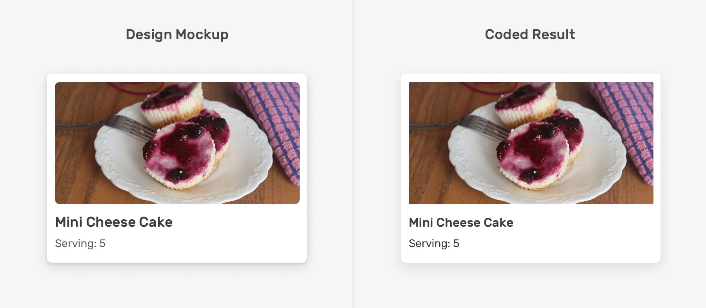Can you guess what is the difference(s) between the design and the code result? It can be tricky, but there are four differences
- Radius
- Color
- Font Size
- Shadow
Ok, enough guessing. Here are the differences:
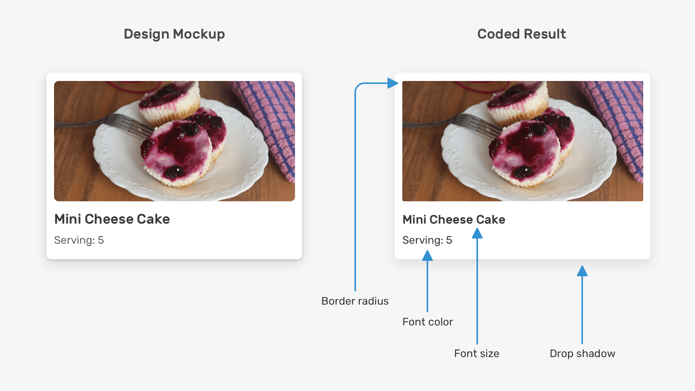If you pay closer attention, you will notice what is different from the design. You may not see them at the first glance though. I placed the design above the coded result, notice the areas where they don’t match.
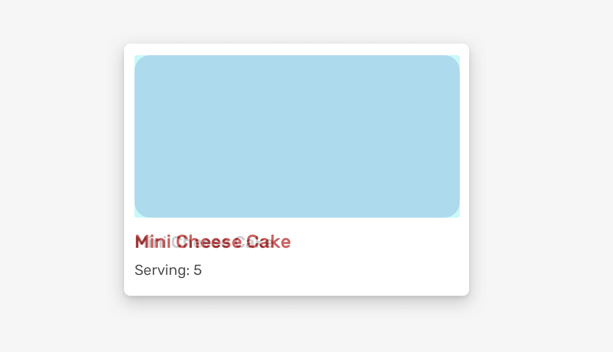This isn’t accepted by a front-end developer. A designer has spent time and effort working on a consistent design. As a developer, we expect that you will give it the same attention and care.
I’m not an advocate of pixel perfection as a term. In fact, I wrote a deep dive article about that and I recommend you to read it. Instead of focusing on the whole process of comparing a design on measuring pixels, it can be focused on look & feel and we can take pixel perfection only when it’s really needed.
Consider the following example.
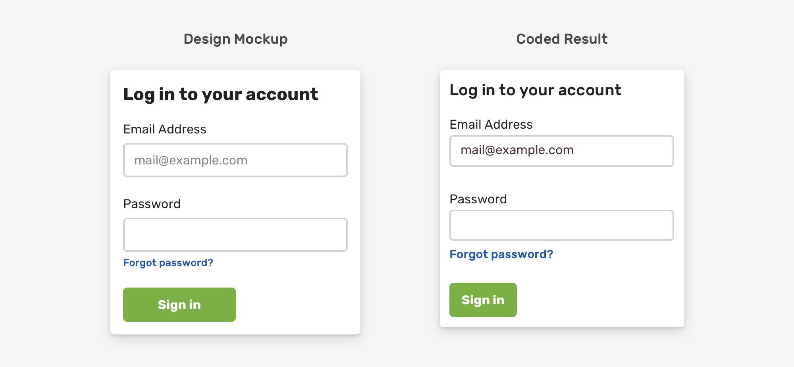The differences in the coded result can’t be overlooked. There are some clear details that make the result looks unprofessional. Such things should be perfect as per the design.
Here is a figure that shows the spacing design details in the previous mockup.
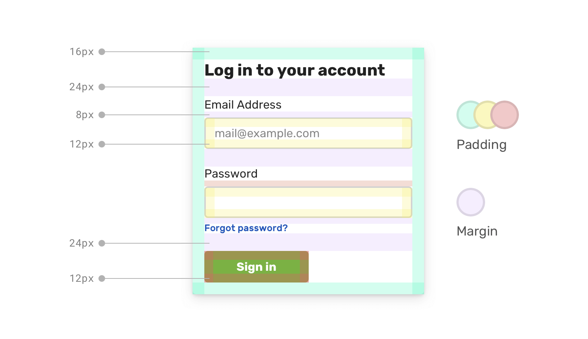The same applies to the font sizes. Such details can’t be missed, and they must be an exact implementation as per the design as they can change the look & feel of the proposed design.
With that, let’s explore the different ways to compare a design to the implemented result.
How To Compare
I will focus on how we can compare a design against implementation. Being able to decide if two things are the same is not easy, and I hope that the next few ways of doing so will make it clear for you.
Overlapping design and implementation
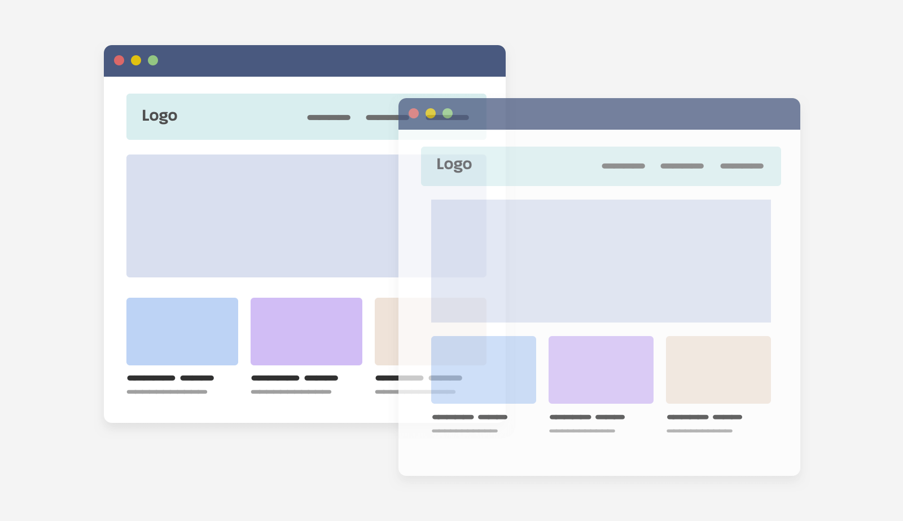In this method, we need to place the implementation above the design and try to spot the differences. To do that, we can do one of the following:
- Take a screenshot for either a full page or a specific component and place it in a design app
- Exporting the design and adding it in the browser as a
background-imageor an<img>in the browser - Open the design and the code result in separated tabs
First, I want to show you the UI that will be used as an example in this article. It’s an imaginative delivery website, and I will focus on the header and hero section. Here it is:
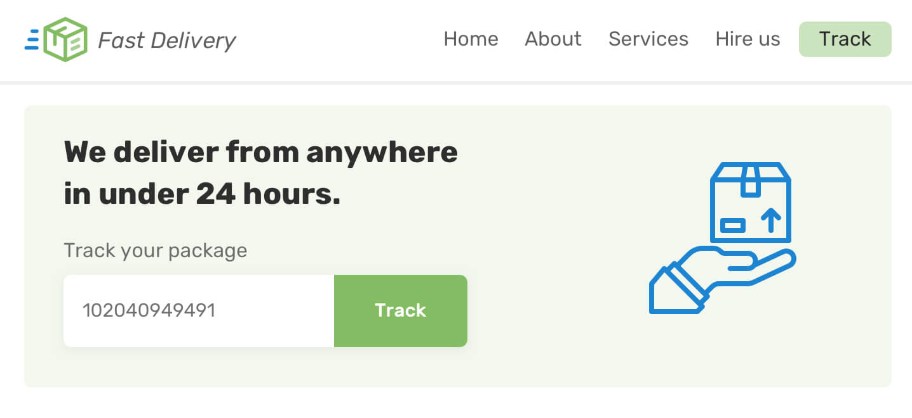I got inspired by this tweet by Brad Brad Frost to write about the techniques I’ve using for years as a designer/developer. Let’s get into comparing.
Taking A Full-page Screenshot
The first thing that I want to focus on is the width screenshot. Let’s suppose that in the design app, the page width is 1440px (The default in Sketch and Figma).
To get a clear comparison, the screenshot and the design width should be identical. I’m using Chrome DevTools for taking the screenshot, but you can use the same feature in different browsers (e.g: Firefox).
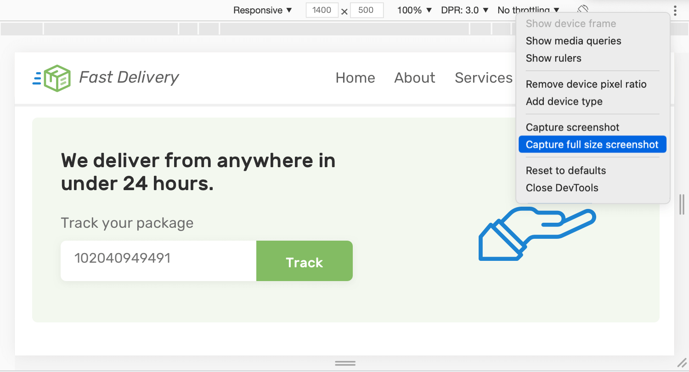Once we capture a full-page screenshot, we need to drag it into the design app and place it above the page. In the design app (Figma, in my case), we need to drag the screenshot above the page:
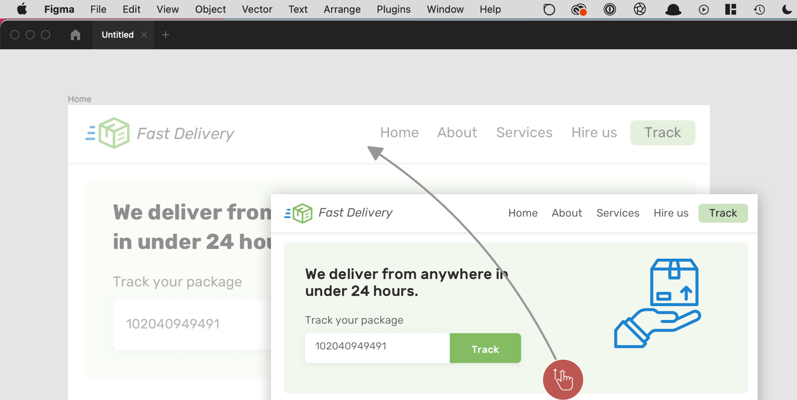Then, all we need to do is to lower the opacity to 50%. This will make it possible to spot the differences between them. Let’s take a look:
Notice how the top image with 50% opacity is showing the spots that are the different. Isn’t that useful, and easy to be implemented? From the figure above, we can spot that:
- Logo is smaller than expected
- Navigation padding is smaller
- Headline font size is too small
- The icon isn’t vertically centered
- Form is smaller
Even better, we can change the blend mode of the design to be Difference which highlights the main differences between the two images.
Taking A Partial Screenshot
We can also take a screenshot of a specific section or component, and compare it against the design mockup. In the DevTools, select the HTML element you want and then select “Screenshot Node” from the dropdown menu.
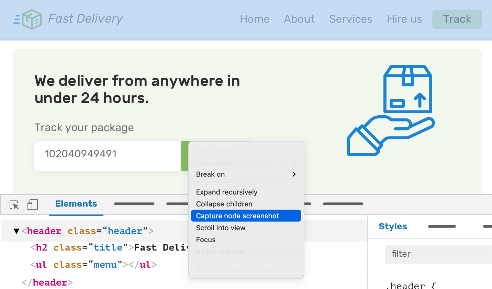For this example, I’m comparing the header element. By dragging it into the design app, we can notice the differences and work on fixing them.
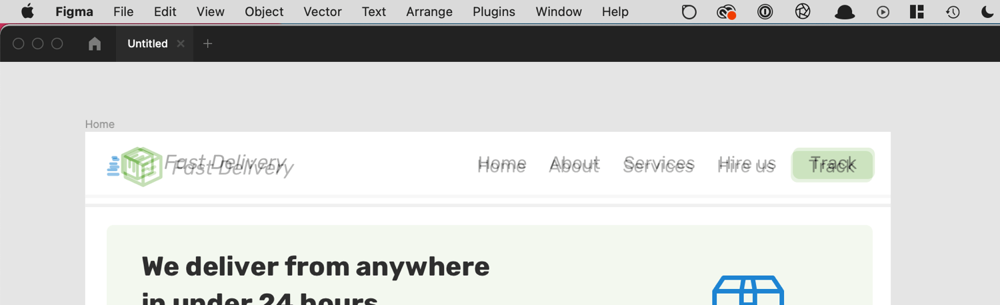Adding the original design as an image in the browser
For this method, we will do the opposite of the previous one. Instead of taking a screenshot from the browser to a design app, we need to take the original design and place it above the page in the browser.
Thanks to CSS backgrounds and pseudo-elements, this is possible. The following is the coded design in the browser.

Again, please make sure that the browser width is equal to the design width for better comparison.
 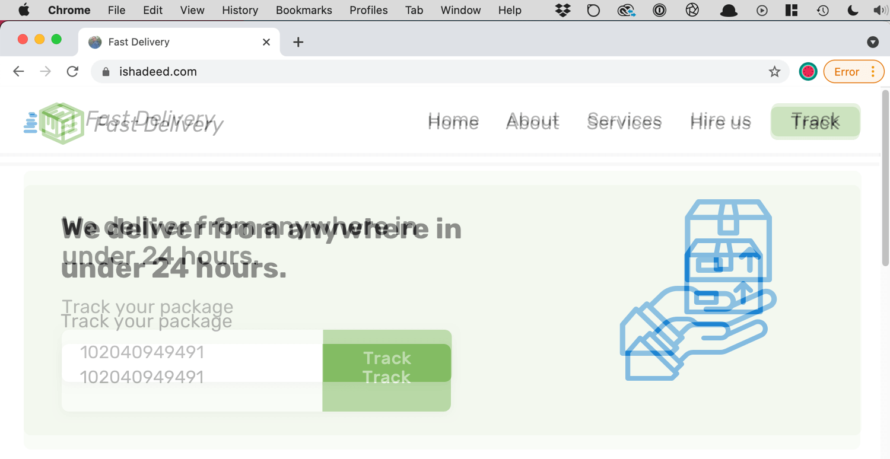
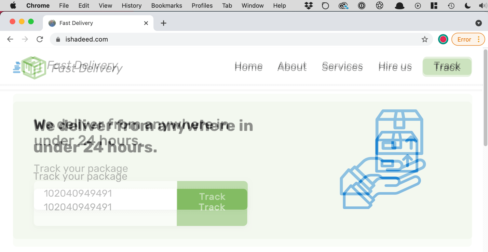
We can also do the same thing using an <img> element if you prefer that. In the end, the benefit is to compare the two designs. Make sure that no other element in the same stacking context has a higher z-index than the pseudo-element.
Adding on that, we can change the blending mode to make the differences stand out more. In CSS, we need to use the mix-blend-mode property.
 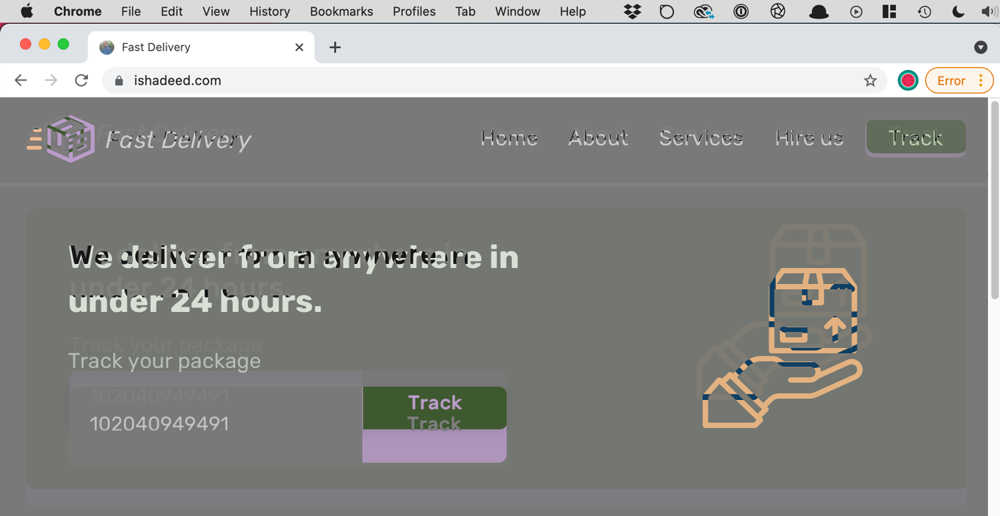
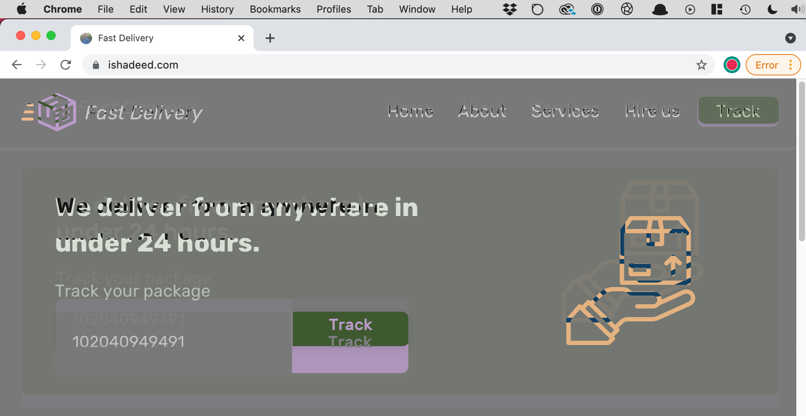
I wrote a detailed article about blending modes in case you want to learn more.
Also, you will notice that nothing is hoverable or clickable, that’s because the pseudo-element is covering the page. We can allow interactivity by setting pointer-events to none.

Open the design as a tab in the browser
Another less known tip that I use a lot while designing a new web project is to open the mockup in the browser. As always, make sure that the mockup width is equal to the browser.
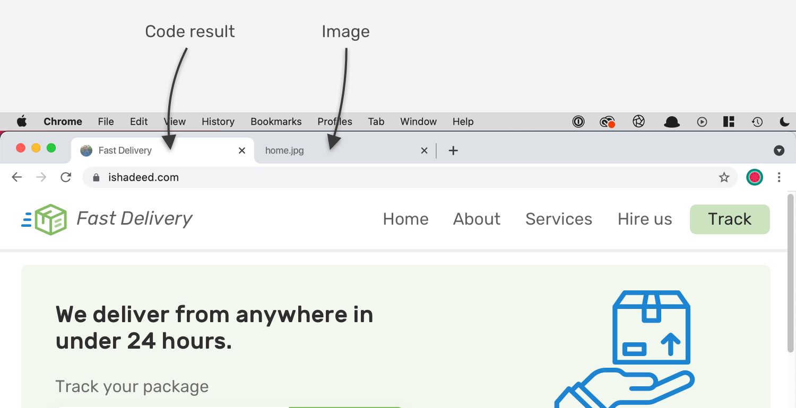By switching between the actual code result and the mockup, we can notice the differences. This works for designers or developers with basic design experience
Getting an element size via DevTools
When inspecting an element in the DevTools, we can get its width and height and compare them with the design. Consider the following figure:
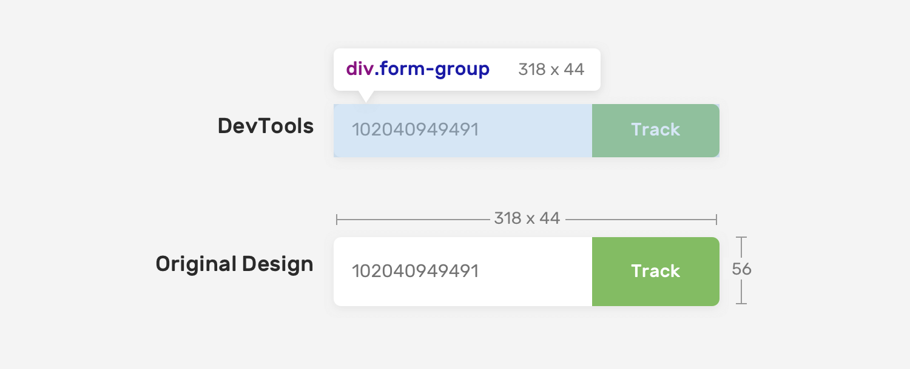There is a 12px difference between the code and design. This is a mistake and something that can be ignored.
Useful Tools
PerfectPixel Extension
This is a free and very good extension that can help in comparing design versus code result. Check it out
Polypane Browser
One of the useful features in Polypane is the ability to add a reference image that can be compared against the code.
Read more about it in the docs.
Quick Tips
Font Issues
There are fonts with large spaces around the baseline and cap areas. They cause issues when being used in CSS. In a design app, the designer can control the text height easily, but in CSS it’s a bit tricky.
Consider the following figure where a button has vertical padding of 8px.
There is a difference between the design and the coded one, even though the padding is equal to the design. Unfortunately, there is no direct solution to this except tweaking the vertical padding. In the future, we might get a property called leading-trim that can fix that. Read about it here.
Having a consistent icons size
It’s important to have icons with the same width and height to achieve consistency in aligning them. This will help to avoid working on a custom alignment for a specific icon.
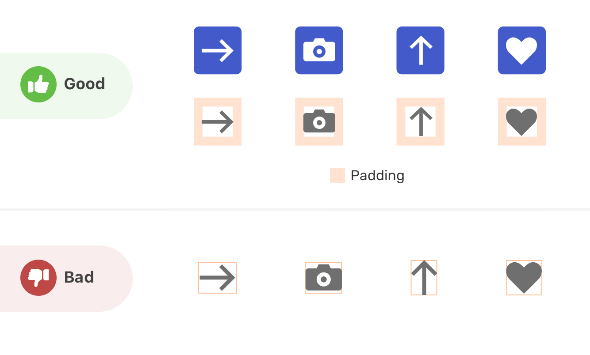The first will make the icons easier to use. Their surrounding box has padding, and they’re properly aligned. While the second ones are custom-sized which will make it hard to deal with them in CSS.
Thank you for reading!